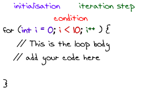

When you have to learn a new programming language, it's usually quite easy. You already know the structures and the way to think when solving problems. The first time might be hard, but the more languages you learn, the more similarities you'll recognize.
I also had to learn a special variant of pseudocode at the time. It can be quite hard to understand what pseudocode does if it isn't unambiguously defined. For example, I had problems with for loops.
For loops have some properties you simply have to define:
- Scoping: Does the loop counter still exist after the loop was executed?
- Copy or reference: Does the loop statement work with a copy or with a reference of the variables in the loop body?
- Last value of i: What is the last value of i?
General Structure
A for loop usually consists of an initialization part, a condition, and an iteration step:
{kind=link}

Python's Special Structure
Python uses a generator or lists to loop:
#!/usr/bin/env python
# -*- coding: utf-8 -*-
for i in range(0, 10):
print("In loop: %i" % i)
print("Out of loop: %i" % i)
Scoping
Does the loop counter still exist after the loop was executed?
- Yes: JavaScript, PHP, Python
- No: C, C++, Java
Copy or Reference
Does the loop statement work with a copy or with a reference of the variables in the loop body? Does the programming language use the same variable as in the for condition (reference) or does it use another one (copy)? You can test this by adding something to i in the body.
- Copy: Python
- Reference: C, C++, Java, JavaScript, PHP
Python iterates over a generator. This means that you can't really compare Python's for-loop to other programming languages' for loops.
Last Value of i
What is the last value of i?
- 9: C, C++, Java (inside the loop), Python (outside of the loop)
- 10: JavaScript, PHP (outside of the loop)
Foreach
Many languages provide a special for loop. This special for loop is sometimes called "foreach" as you iterate over each element in a collection (e.g., an array).
Java
int[] array = new int[5];
array[0] = 0;
array[1] = 1;
array[2] = 2;
array[3] = 3;
array[4] = 4;
for (int item: array) {
System.out.println("Foreach: " + item);
}
JavaScript
var array = new Array(0, 1, 2, 3, 4);
for (var value in array) {
document.write('Foreach: ' + value + '<br/>' );
}
PHP
$array = array(0, 1, 2, 3, 4);
foreach ($array as $key=>$value) {
echo "Foreach: $value<br/>";
}
Python
array = [0, 1, 2, 3, 4]
for value in array:
print("Foreach: %i" % value)
More Information
If you want to see the code, you can download this zip archive.
It's quite astonishing, but Wikipedia has a very long article about for loops.